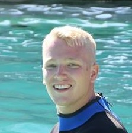
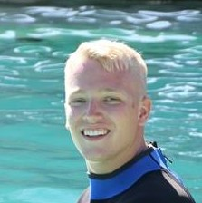

My name is Ryan. I am a designer, inventor, and an artist. I enjoy talking about philosophy, the meaning of life, and looking at the stars. My favorite color is green because it is the color of life and nature. I enjoy working with my hands, building things, and inventing new ways of doing things.
I graduated from Michigan State University in 2013 with a Bachelor's Degree in Media Arts and Technology, and a minor in Computer Science. I have a wide range of experience including film making, 3D-modeling (and rendering and animation), graphic design, web design, and programming. Most of my experience is in graphic design, which is what this portfolio shows examples of.